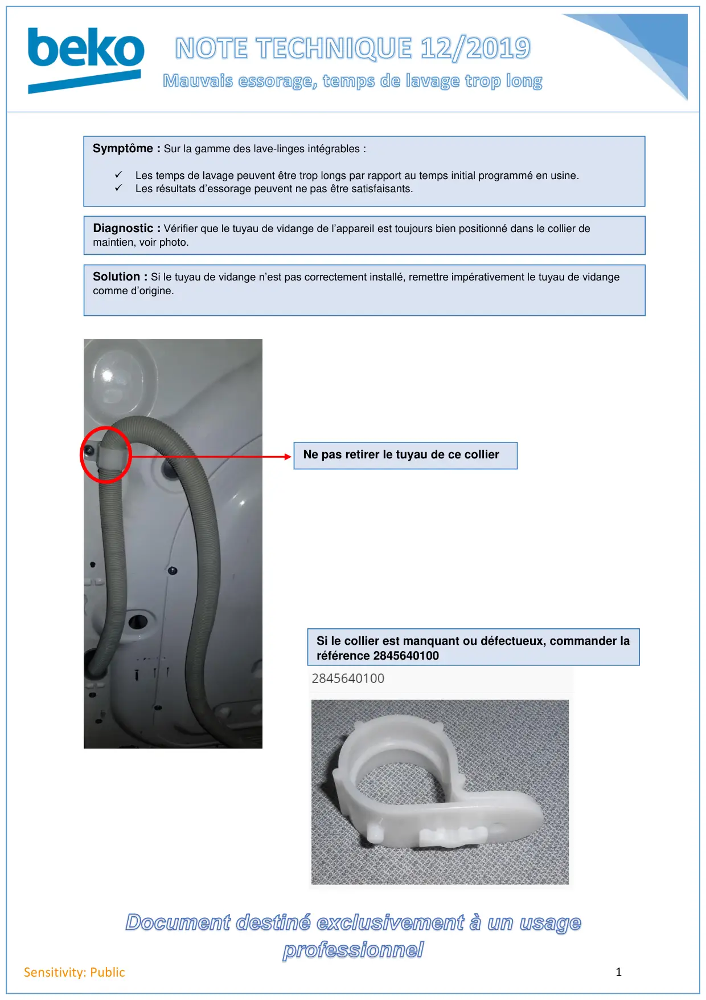

Tuyau de vidange lave linge Intégrable

1Sensitivity: PublicSymptôme : Sur la gamme des lave-linges intégrables :✓Les temps de lavage peuvent être trop longs par rapport au temps initial programmé en usine.✓Les résultats d’essorage peuvent ne pas être satisfaisants.Diagnostic : Vérifier que le tuyau de vidange de l’appareil est toujours bien positionné dans le collier demaintien, voir photo.Solution : Si le tuyau de vidange n’est pas correctement installé, remettre impérativement le tuyau de vidangecomme d’origine.Ne pas retirer le tuyau de ce collierSi le collier est manquant ou défectueux, commander laréférence 2845640100
1 / 1